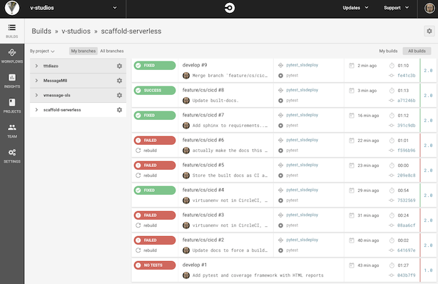

A Scaffolding for Serverless¶
Docs¶
We use Sphinx for documentation, and it’s written in Python, so we’ll setup a Python virtual environment.
Install¶
If you are using pyenv to manage python versions, pick a python3 like:
pyenv local 3.6.3
Create a virtual environment:
virtualenv --python=python3 .venv3
Activate your virtual environment:
source .venv3/bin/activate
I manually installed Sphinx, then created a requirements requirements.txt file so you don’t have install it; instead, install all the listed and versioned dependencies:
pip install -r requirements.txt
Then I ran the quickstart and took the defaults, except I used
docs as my root path, and gave it my name and version number:
sphinx-quickstart
You won’t have to run the quickstart, everything’s in docs.
Building Docs¶
To do it manually, you can build the docs by going into the docs
directory (with virtualenv activated) and use its Makefile to create a
HTML version:
cd docs
make html
Then you can open up the _build/html/index.html file and see your beautiful docs. Ta da!
That creates standalone html files, but you can make a single large HTML with:
make singlehtml
whose output is in _build/singlehtml/index.html.
You can even make ePub with:
make epub
and find the output in _build/epub/ScaffoldingServerless.epub.
As a convenience (with virtualenv activated), in the top level directory, you can build all versions:
make docs
Testing¶
We prefer pytest to the built-in unit tests as they’re shorter to write and have more capabilities. It’s installed as part of the requirements.txt file.
You should write your tests, organized into different test_\*.py
or *_test.py files under the tests/ directory. For example,
you might have test_apig.py, test_dynamodb.py,
test_authentication.py and so on. You can use this for unit tests
or integration tests.
For info on writing tests, see the pytest docs.
To run the tests, with virtualenv activated, in the top level directory, do:
make tests
We also installed pytest-cov to measure code test coverage. You
can run that with:
make coverage
It’s settings are configured in .coveragerc. It stores state
information in .coverage and output a HTML report under
htmlcov/; don’t check these into source control (these are
gitignored here).
CI/CD¶
Continuous Integration / Continuous Deployment helps find bugs faster and helps prevent bad code from getting out into the world.
We use commercial SaaS CircleCI as it’s reasonably priced, pretty easy to use, and featureful with good integrations into GitHub, AWS, etc.
To create a new “project”, login to CircleCI with your GitHub credentials, select your group from the list of GitHub groups you belong to(e.g., v-studios) from the top left pulldown, then click into PROJECTS on the left nav bar. Add Project from the top right: it will list your GitHub repos. I picked “scaffold-serverless”, strangely enough, and select “Setup project”.
Next pick Operating System “Linux” and Language “Python”
TODO: we have to pick a different language container for Serverless, because we need Node and Python; I’m trying Node this time to see if it might have python.
I followed the directions to create a .circleci/config.yml file and then started to populate it.
I’ll first make it create a virtualenv, pip install the requirements, then run the tests. It should test our (serverless) python code.
Later, I’ll add a workflow step that deploys the serverless app to our AWS “stage” (feature-branch, dev, qa, prod). Then run integration tests.
Instead of hard-coding all the virtualenv and pytest command line goo in the CircleCI config, we use targets in the Makefile. That way, we can give the developer easy “make …” commands that are identical to what the CI system uses.
When you commit and push – to any branch – CircleCI will build. You can check the status on the CircleCI Dashboard.
Deploy Serverless App to Multiple Stage Environments¶
Create a new AWS IAM user circleci-scaffold-serverless, currently with Admin privs so it can create infrastructure. Grab the creds and paste them into the CircleCI AWS settings for this project
Setup .circleci/config.yml to build and test, then deploy.
and grab the
{kind=link}
Linting with Flake8¶
We use Flake8 <http://flake8.pycqa.org/en/latest/index.html>`_ to
"lint" our code. Linting, from the ``C language, is an automatic
inspection of code that looks for sloppy technique or other suspicious
things. It’s frequently used to enforce compliance to standard Python
coding guidelines like PEP8.
The run of Flake8 is configured by a .flake8 file in the top
directory. We’ve tweaked it to allow 96-character long lines instead
of the more restricive (and less readable) 72 characters PEP8
recommends; in a world of big screens, 72 decreases readability.
Git Hooks¶
We use a git Pre-Push hook .git/hooks/pre-push. Unsurprisingly, it’s run right before pushing code to the repo. That hook does things like runs our test suite and Flake8 lint checks.
If any of the tests or the flake8 process fail, the script exits with a non-zero status and this prevents the git push from going through. Fix your code, commit, and try again.
If you want to force a push, of untested, unlinted code, use the flag like:
git push --no-verify
and hang your head shame in.
I’ve created a build-badge for the top README.rst. On the
CircleCI’s projects page hit Settings for this project then Status
Badges. Since this is a private repo, I had to crate a new token,
which I called scaffold-serverless-build-badge, then selected
reStructuredText and pasted the generated code in the README file.
Serverless Crudite¶
We create a sample CRUD app that should allow file upload, extraction of simple metadata, publishing the metadata to a database, viewing and editing the information.
Pick a recent Node version:
nvm use 9.2.0
I created an initial package.json:
npm init
then installed the Serverles framework locally:
npm install --save serverless
Perhaps I’m using npm wrong but it feels dangerous doing a global
install of serverless to get the sls command (which is installed
in /usr/local/bin/). Instead, we’ll have to drill into our
node_modules directory. Create a new Serverless service:
./node_modules/serverless/bin/serverless create --template aws-python3 --path app
Set your AWS Profile so you can create serverless resources, this is profile name:
export AWS_PROFILE=vstudios
Go into the app directory and deploy the sample app:
../node_modules/serverless/bin/serverless deploy
Stage-based AWS Environments¶
We are creating separate AWS environmets for each “stage”, like “dev”, “qa”, and “prod”. We also create developer-specific environments that are used for their feature branches. This allows developers freedom to tinker without blowing away other developers’ work.
The AWS environment – what Serverless calls “stage” – is based on the the GitFlow model. The stage name is based on the Git branch that’s being processed:
| Branch | Stage Environment | Comment |
|---|---|---|
| (any) | local | Work on your computer only |
| feature/* | $CIRCLE_USERNAME | Feature Branches build an environment named for your GitHub username |
| develop | dev | Default stage name for the Serverless Framework |
| release/* | qa | Quality Assurance checks are done before release to production |
| master | prod | The conventional name for production systems |
Note that “master” and “develop” branches get fixed stage names “prod” and “dev” respectively. “release/” branches use the “qa” stage config. “feature/” branch, like “feature/cs/VW-525_create_cicd_framework” uses a stage name based on the $CIRCLE_USERNAME variable which is the same as the developer’s GitHub username – in my case, “shentonfreude”.
Variables specific to each Serverless “stage” are in
stagevars.yml. In that file, we have
.yml sections named for each stage. Some tweaks to the
environment are done in serverless.yml, like
suffixing the stage name to S3 buckets or DynamoDB tables to ensure
uniqueness across all environments.
The developer-specific stage allows all developers to have their own AWS environment and prevents one developer from breaking the work of another. Since Serverless resources – Lambda, S3 and DynamoDB – are very inexpensive to run, this is a minimal cost. (If we had ELB, EC2, and RDS resources, we might not do this due to the high cost).
While we expect to use CI/CD to deploy, if you want to deploy the Serverless code manually, you should use a stage name that equals your GitHub username. This way, you’ll have your own environment, one that’s also used by your feature branches. Like this:
../node_modules/serverless/bin/serverless deploy --stage=shentonfreude --verbose
The “qa” stage, based on a “release/*” branch, allows us to continue work on the “development” branch while we allow stake holders (e.g., customers) to review what we expect to deploy to production soon.
API¶
We’ve added an API, using API Gateway so we can handle web requests. These endpoints are defined in the serverless.yml file, and specify the URL path, method, and handler to invoke.
GET /upload_url¶
Get a presigned key URL that we can use to PUT the file to do an upload.
Ideally we would like a web page that presents an upload form. It would first GET a presigned URL from the API, then the browser would directly PUT the file to that URL. This prevents tying up the API server with potentially long and large upload files.
Until we have a web page and Angular code to handle the form, response
and upload, we’ll use curl.
First, find the API endpoint based on your stage:
\../node_modules/.bin/sls info --stage shentonfreude
I then set a variable for the URL to make it easy to refer to:
urlget="https://WHATEVER.execute-api.us-east-1.amazonaws.com/shentonfreude/upload_url"
Get a presigned URL from the API, specifying the name of your file as a querystring param:
curl $urlget?filename=ALEX.JPG
{"url": "https://uploads-info-shentonfreude.s3.amazonaws.com/ALEX.JPG?AWSAccessKeyId=..."}
Set a variable to that long URL for convenience:
url="https://uploads-info-shentonfreude.s3.amazonaws.com/ALEX.JPG?AWSAccessKeyId=..."
Then PUT a file to that URL:
curl -i --upload-file ~/Pictures/alex.jpg $url
serverless.yml¶
We define the function and handler together:
getUploadPSK:
handler: handler.get_upload_url
events:
- http: GET /upload_url
The Lambda must be given permissions for the presigned URL to allow the upload:
iamRoleStatements:
- Effect: Allow
Resource: arn:aws:s3:::uploads-info-${self:provider.stage}/*
Action:
- s3:PutObject
- s3:PutObjectAcl
- s3:PutObjectTagging
GET /assets¶
Return info about the assets from the DynamoDB table, as JSON or if ‘text/html’ is in the request’s Accept header, as HTML.
It’s naive and just does a table scan, which is expensive and stupid but will be OK for this toy demo (unless we get a lot of items).
I had to fight with DynamoDB to turn numerics returned by boto3
as decimal.Decimal types into plain old int so JSON could
render them.
serverless.yml¶
The endpoint is specified in serverless.yml and we don’t have any
new permissions to add:
getAssets: # JSON, or HTML if "Accepts: text/html"
handler: handler.get_assets
events:
- http: GET /assets
TODO¶
- Add our source code directories to the coverage report (it does
.now, which is useless) - separate requirements-devel.rst
- Try and prevent pip from reinstalling everything on every run, figure out the dependecy detection
- accept form fields like: “curl –form filename=ALEX.JPG”; may have to do with a POST Lambda handler